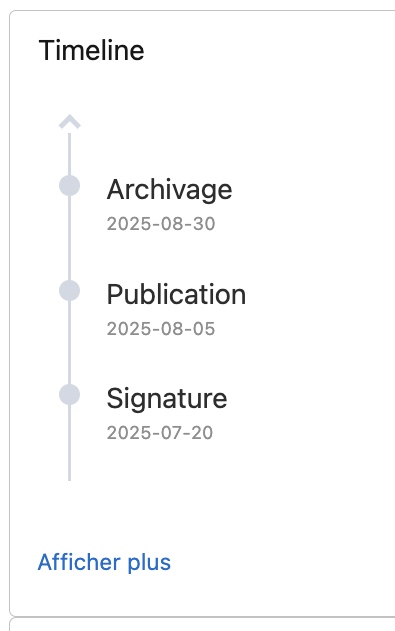

Première année
Durant mon stage de six semaines, du 12 mai au 20 juin 2025, chez Kiliogene, société spécialisée en solutions Salesforce, j'ai travaillé en tant que développeuse front-end sur des composants Lightning Web Components (LWC). Encadrée par un tuteur expérimenté, j'ai participé à l'amélioration et à la création de composants génériques réutilisables, intégrables dans des Flows ou d'autres LWC.
J'ai notamment développé ou amélioré :
- Une dual-picklist avec barre de recherche dynamique
- Une timeline multi-orientations avec affichage progressif et scroll horizontal 
- Une nullable checkbox adaptée aux valeurs null/undefined
- Une tree grid responsive, avec affichage récursif, adaptation sur mobile et sélection de lignes

Ces missions m'ont permis de maîtriser des technologies comme HTML, CSS, JavaScript / TypeScript, Git, et de découvrir les spécificités de Salesforce. J'ai aussi appris à écrire des tests unitaires avec Jest, à utiliser Figma pour la conception de maquettes, et à collaborer en équipe via des outils comme Slack.
Ce stage m'a permis de gagner en autonomie, de renforcer ma rigueur et de confirmer mon attrait pour le développement informatique. Grâce à cette expérience, j'ai acquis une meilleure vision du métier et des attentes du secteur.